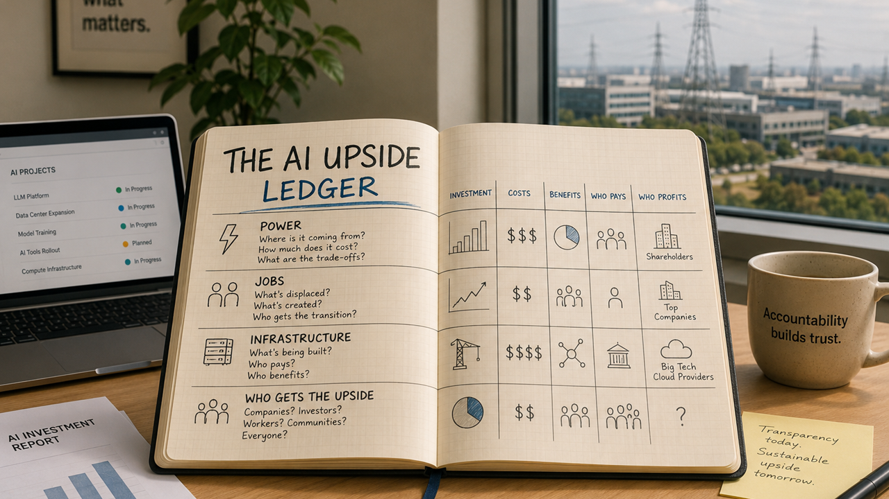

Image captionOpen notebook on a desk displaying "The AI Upside Ledger", tracking power, jobs, infrastructure and who benefits from AI progress.
The appeal of AI has moved out of the demo window. That is good, mostly. A tool is more interesting when it leaves the launch video and starts showing up in boring places: customer support queues, hospital paperwork, software reviews, supply chains, city permits, lab notebooks, classrooms, accessibility devices. The public case for AI gets stronger when the technology helps normal people do work that used to be too slow, too expensive or too locked away.
But there is a catch now. The costs have become visible too. Compute is no longer an abstract cloud word. It is land, water, grid planning, chips, transformers, transmission lines, local tax deals, worker training, noise complaints and political trust. The industry cannot keep asking for patience with one hand and public infrastructure with the other hand while treating the upside as if it will explain itself later.
This is a personal opinion, not professional advice. Sources and claims should be checked directly. The basic view here is simple: AI still has enormous appeal, and the shift is probably not stoppable in any clean way. The better question is whether the buildout earns public permission by making the gains visible enough, broad enough and honest enough.
Power and place are part of the product now
The International Energy Agency put the energy question in plain terms: there is no AI without electricity for data centers. Its Energy and AI report says the issue is not only demand from AI, but also what AI could do for the energy system if used well.1 That is the right tension. AI can make grids smarter, improve forecasting, reduce waste and speed up technical work. At the same time, the data-center buildout can strain exactly the local systems that have to carry it.
Meta's own newsroom has been running explainers on compute power, GPUs, CPUs and custom silicon, while also announcing AI-enabled data-center activity and workforce programs.4 That tells the story better than any slogan. The biggest AI companies are no longer only software companies in the public imagination. They are infrastructure actors. If they want communities to accept that role, the bargain has to be legible.
A useful AI data center should not be defended only with national-competition language or vague future productivity. It should be able to answer local questions: who pays for grid upgrades, who gets trained, what happens to rates, what tax revenue comes back, what water is used, what jobs remain after construction, and what public services improve because the facility exists. If those answers are weak, the appeal weakens.
The job story needs less theater
The work question has also matured. Anthropic's Economic Index is one attempt to measure how AI is being used across tasks,2 and Anthropic's Economic Futures work points at the policy version of the debate: if advanced AI changes demand for human labor, governments and companies need better tracking, training, job matching, income support and broader ownership of AI-created gains.3
That is uncomfortable, but it is better than pretending every displaced worker will simply become a prompt engineer by autumn. AI cannot promise to protect every old job. The stronger claim is that it can raise the floor of what individuals and small teams can do, compress expensive services, give disabled users better tools, help learners get unstuck, and reduce the amount of human life spent on dead paperwork.
The public will not trust that claim if the benefits arrive as private margins and the costs arrive as public anxiety. A good AI story needs a distribution plan. Not a magical one. A real one: cheaper access, better tools in schools and public agencies, credible labor data, retraining that leads somewhere, and companies that can say more than "efficiency" when asked what happens to the people around the workflow.
Humanoid robots make the ledger physical
Robots sharpen the whole argument because they bring AI into space. Figure's Helix work is useful here because it frames humanoid control as perception, language and action joined together.5 That is the deeper signal behind all the lab videos. A robot folding, sorting, loading or handling objects is not just another content clip. It is an early public test of whether AI can operate in messy physical environments where failure has weight.
The appeal is obvious when the task is dangerous, dull or physically punishing. A robot that can help in warehouses, elder care logistics, disaster recovery, hospitals or maintenance has a public-interest case. The criticism is also obvious. Safety has to be boringly strong. Claims need proof. Labor effects need to be counted. A robot that looks impressive in a controlled room is not yet a social contract.
That is why the next AI pitch should look less like a miracle reel and more like a ledger. What does it cost? What does it save? Who is safer? Who gets more capable? Who is displaced? Who gets trained? Who gets paid? Who can verify the claim? If AI companies answer those questions well, the appeal gets sturdier. If they dodge them, even good technology starts to feel imposed.
The appeal is still there
None of this is an argument for cynicism. The useful side of AI is real. Better coding help, faster research review, stronger accessibility tools, cheaper tutoring, smarter energy systems, better medical administration, more capable small teams: these are not small things. They are exactly why the technology keeps pulling people in even when the discourse gets sour.
But the site is called Appeal of AI, not Applause for AI. The appeal has to survive contact with the bill. It has to survive the grid meeting, the worker meeting, the school budget, the city council hearing, the accessibility use case, the robot safety review and the family wondering whether the next tool makes life easier or just makes every institution more automated and colder.
The optimistic position is not blind cheerleading. It is the belief that a powerful, difficult technology can still be worth building if its builders are forced to keep a public ledger. The upside should be visible enough that people do not need to take it on faith.